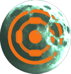
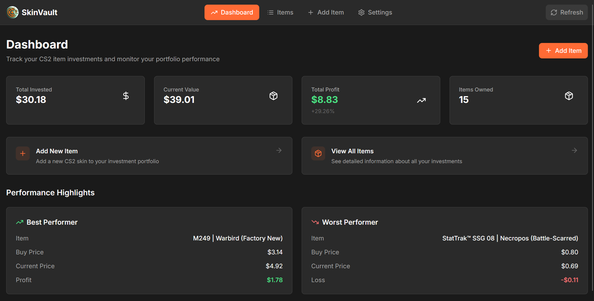
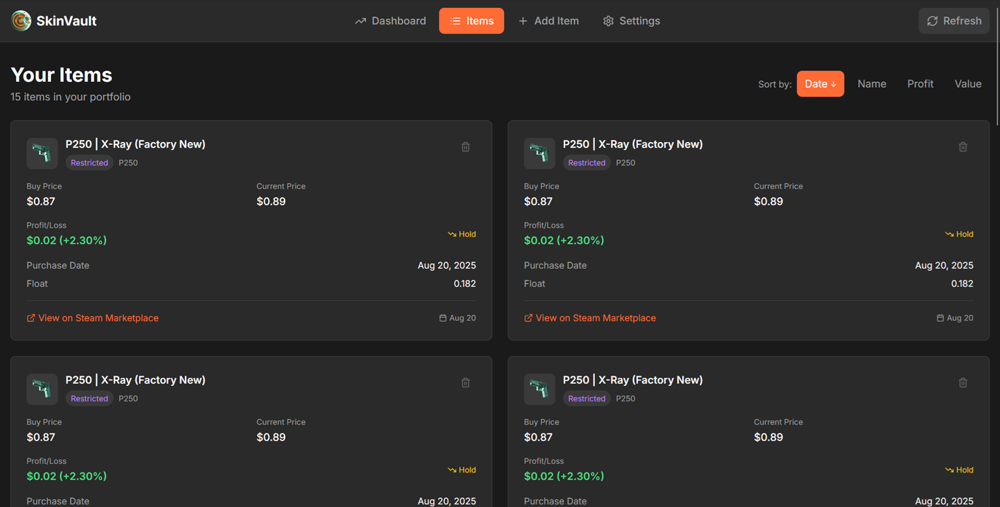
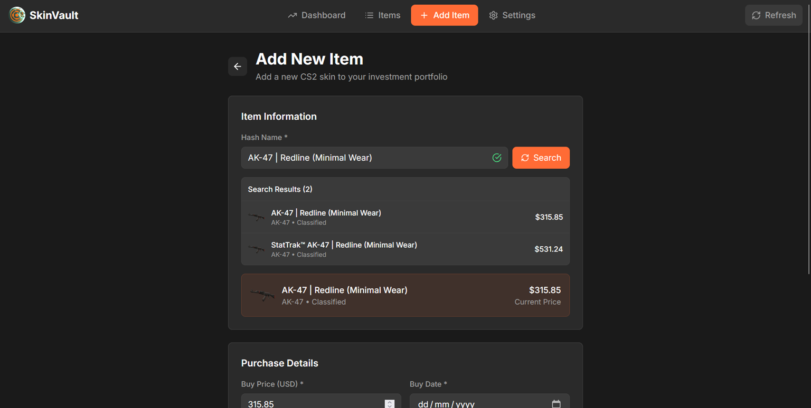
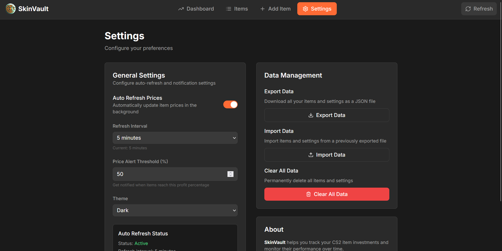

Skin Vault
Links
Project Description

A simple CS2 inventory price tracker I built to keep track of my item “investments” and see whether I’m actually making profit or just coping.
It pulls price data directly from the Steam Marketplace, accounts for Steam tax automatically, and lets you monitor how your items perform over time.
All data is stored locally in the browser, with export/import support so you don’t lose your portfolio. Right now it only runs locally since I’m using a Vite dev server proxy to access the Steam Marketplace API.
A little history
I got back into Counter-Strike, found some old cases from my CSGO days, traded them for skins, and slowly fell into the whole skins marketplace rabbit hole. Tracking purchases manually got annoying fast, so I built my own tool.
There are platforms that do this way better (like Pricempire), but this one’s mine. I can tweak it however I want, experiment with features, and use it exactly the way I need.
Screenshots



